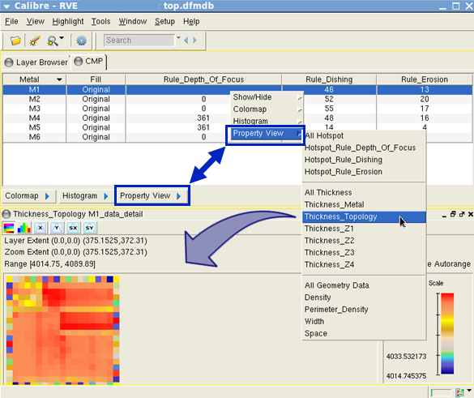
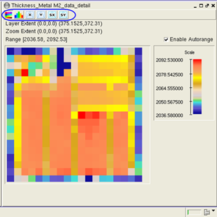
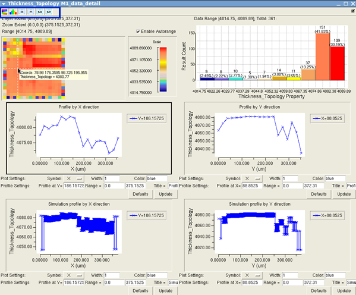

You can use Property View functionality
to visualize and analyze colormap, histogram, and profile and simulation
plots in a single window. This enables you to easily compare and synchronize
the data between different types of plots.
Prerequisites
You have
performed a CMP analysis as described in “CMP Analysis”, and you
have a DFM database containing the analysis results.
Calibre RVE
for DFM is open with data displayed in the CMP tab
and you have reviewed the Setup > Options menu
items as described in “Reviewing Analysis Results”.
Procedure
- Right-click
on the M1 row and choose Property View > Thickness
Topology, or alternatively, click the Property
View button (in the lower‑left corner) and choose Thickness
Topology.
The Property View GUI window opens and displays a
colormap of M1 Thickness Topology.
Figure 1. Selecting
Property View by Menu or Button
- Use the
buttons at the top of the Property View GUI to create different
types of plots in the same window.
Figure 2. Property
View GUI Window
You can toggle the GUI buttons to draw or hide the
different plot views. From left‑to‑ right, the GUI buttons control
colormap, histogram, profile by X/Y, and simulation by X/Y plot
views.
Figure 3. Property
View GUI Window Plots
- Zoom in
and out of the colormap and observe that the profile by X/Y direction
and simulation by X/Y direction plots are synchronized to zoom in
and out simultaneously.
The histogram plot can also be synchronized.
- Perform
further analysis of the plot data as needed.
- Close the
Property View GUI window when you are finished with your analysis
by Choosing Close in the dropdown menu in
the upper‑left corner of the window.
Results
You have used Property View functionality to compare and analyze
CMP data using different plot types in a single GUI window.